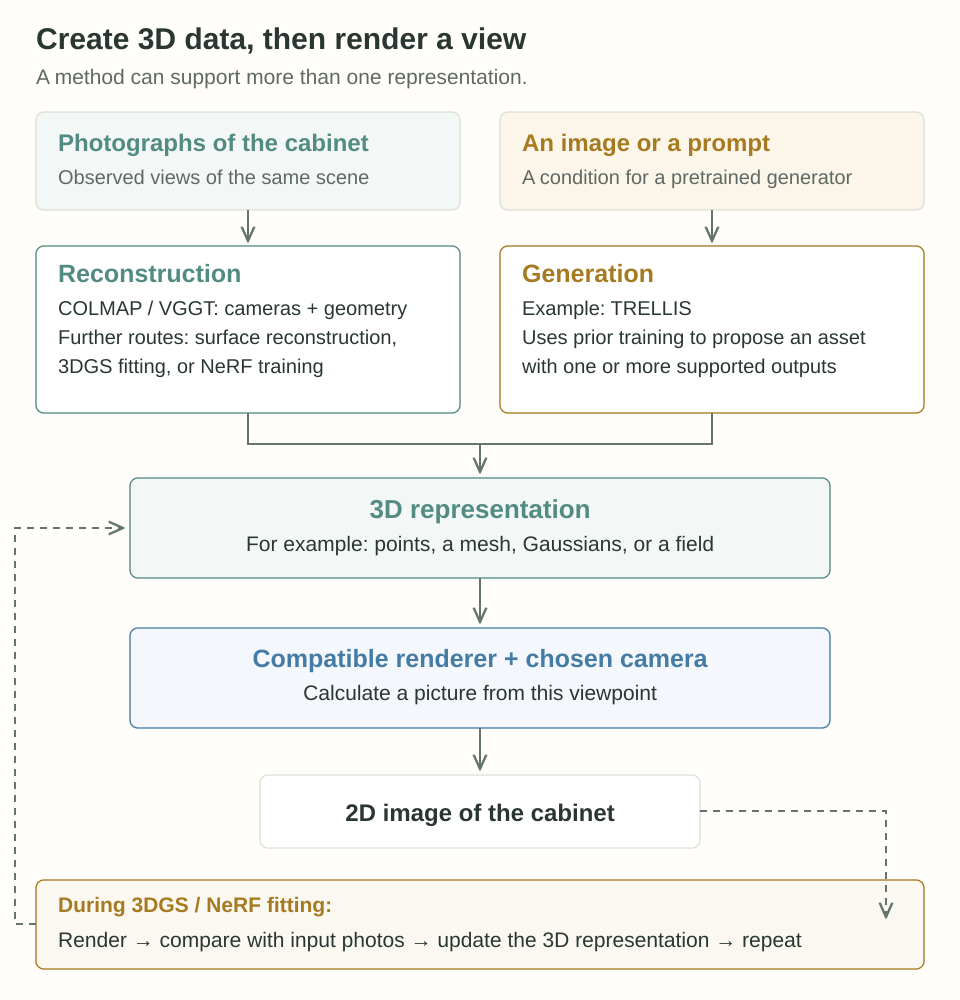
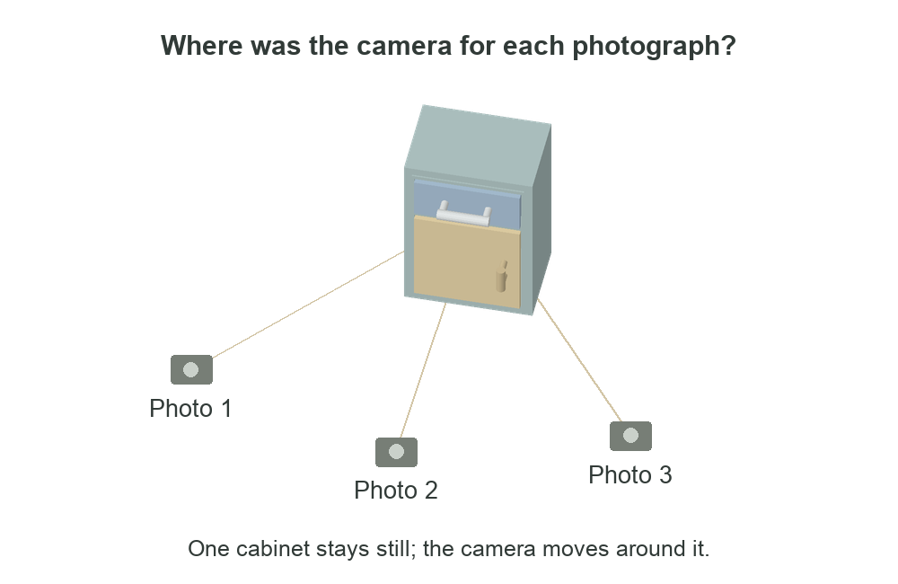
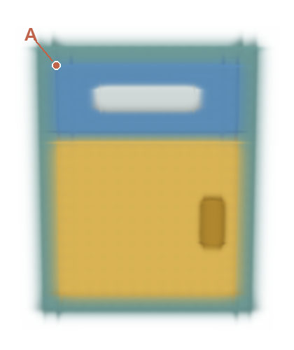
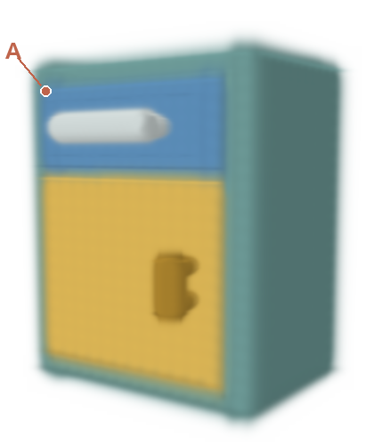

2.7 Reconstruction: cameras, points, and meshes
C. Reconstruction and generation · COLMAP and VGGT
Reconstruction estimates a 3D description from photographs. Given overlapping views of the same cabinet, estimate its shape and where the cameras were when the photographs were taken.
Several views of the cabinet
Estimate the scene from the images
Viewpoints, points, or depth estimates
Section 2.4 supplies a scene and camera to make a picture. Here, the pictures are the evidence used to estimate those unknowns. A photograph does not uniquely determine the hidden surfaces, so reconstruction gives an estimate rather than an exact reversal.
Inverse rendering describes inferring scene properties from images, often including shape, materials, and lighting. One example recovers all three together. This section focuses on camera and geometry reconstruction: COLMAP uses matching details across views, while VGGT predicts geometry with a pretrained model. Both estimate camera and geometry information that can be inspected in 3D or used by later reconstruction stages.
2.7.1 Reconstruction and generation: the workflow
Where the methods fit
Reconstruction uses observations to estimate the scene that was photographed. Generation uses a pretrained model to propose an asset from an image or prompt. Both can produce data in the representations introduced earlier; which output is available depends on the method.


COLMAP and VGGT first give us camera and geometry estimates. Those geometry estimates are already reconstruction results. We can then build a mesh from sufficiently detailed points, fit Gaussians with 3DGS, or train a NeRF using the photographs and camera parameters. TRELLIS illustrates a pretrained generation route in Section 2.10.
Use rendering to check an estimate
In 3DGS and NeRF, rendering checks how well the current 3D description explains the photographs.
Propose a cabinet representation from its photographs.
Draw that representation from the photograph’s camera and compare the two images.
If the rendered handle appears in the wrong place, the 3D estimate may need to change. The original 3DGS and NeRF methods repeat this comparison across several camera views. Adjusting a representation to match the observed images is called fitting.
The photographs are the evidence; the 3D representation is what we adjust. Rendering is the check that connects them: it lets us compare a picture made from the estimate with an actual input picture.
2.7.2 What information do we need?
Keep the cabinet, door, and drawer still while photographing from different positions. The images are the observations we want the reconstruction to explain.
- Camera parameters
- Where was the camera, which way did it point, and what were its lens settings for each image? These determine the line of sight for each pixel.
- Geometry estimates
- Where might the cabinet’s surfaces be in 3D? Depth estimates and 3D points provide information about their locations.


COLMAP and VGGT offer two ways to estimate this information from photographs. COLMAP matches details across views; VGGT uses patterns learned during prior training. When camera positions and settings are already known, we can supply those values directly.
2.7.3 COLMAP: match details across views
COLMAP is software that estimates cameras and 3D points by finding the same details in different photographs. The cabinet drawings below illustrate this process. Follow the marked drawer corner:



A marks the same cabinet corner in all three views. Software matches recognizable details across photos. From many such matches, it estimates where the cameras were and where the details sit in 3D.


This camera-and-point estimation is called Structure from Motion (SfM). COLMAP is one tool for it. A plain, featureless panel can provide few reliable matches; we do not yet have a complete cabinet surface.
The sparse reconstruction provides camera parameters and scattered 3D points. Keep the input photographs too: later stages will compare rendered images with them. This example stops at COLMAP’s sparse stage; COLMAP also has tools for denser reconstruction.
2.7.4 VGGT: predict cameras and geometry
VGGT (Visual Geometry Grounded Transformer) predicts the 3D arrangement of a scene from images. It can estimate camera viewpoints, recover surface depth and 3D points, and track selected points across views. It is pretrained: it uses what it learned from many scenes to make predictions for a new cabinet. It accepts one or multiple images; this example uses overlapping views of the same stationary cabinet. VGGT project.
Cabinet images
A pretrained geometry model
Cameras + depth / 3D points
| Capability and output | Cabinet example | What this lets us do |
|---|---|---|
| Estimate cameras Camera parameters | Estimate where each photograph was taken, which way the camera faced, and its lens settings. | Place a virtual camera at the estimated viewpoint and calculate rays through its pixels. |
| Estimate surface depth Depth map | For pixels on the drawer front and cabinet sides, estimate how far into the camera view those surfaces lie. | Combine depth with camera information to place visible surface points in 3D. |
| Predict surface positions 3D point map | Assign 3D coordinates to image locations, including the drawer corner and points across the panels. | Collect those positions into a point cloud to inspect the cabinet’s shape. |
| Follow a selected point Point tracks | Locate the same selected drawer corner in the other views where it is visible. | Associate observations of the same physical detail across photographs. |
The depth and point predictions already describe geometry. Displaying the predicted surface points in a 3D viewer gives a point-cloud reconstruction of the cabinet. The official VGGT viewer provides examples of inspecting these results.
For the next stages in this book, we keep the photographs and export the estimated cameras and 3D points. VGGT’s export tool writes them in COLMAP’s file format, which reconstruction software can read.
To obtain a Gaussian scene, continue with a Gaussian training method. The official VGGT integration passes the images, estimated cameras, and points to gsplat, a Gaussian rendering and training library. Training then adjusts the Gaussians to match the cabinet photographs.
2.7.5 Where do these outputs go next?
Section 2.7 prepares photographs, camera parameters, and initial geometry estimates. Sections 2.8 and 2.9 use that preparation in two alternative reconstruction methods: fitting 3D Gaussians or training a NeRF network. Each method builds a 3D representation whose rendered views match the cabinet photographs.
Both methods repeatedly use 3D → 2D rendering, introduced in Section 2.4: render the current representation, compare it with a photograph from the same camera, and use the differences to improve the representation.
Continue with 3DGS
Inputs: photographs, camera parameters, and estimated 3D points.
- Use estimated 3D points as starting locations for Gaussians.
- Use each camera to render the current Gaussians from its photograph’s viewpoint.
- Compare with that photograph and adjust the Gaussians.
Saved result: the fitted Gaussian parameters.
Follow the cabinet in Section 2.8Continue with NeRF
Inputs: photographs and camera parameters.
- Use each camera to construct rays through image pixels.
- Sample positions along those rays and query a network for color and density.
- Render pixels, compare with the photographs, and adjust the network.
Saved result: a trained network that describes the cabinet.
Follow the cabinet in Section 2.9The 3D points play different roles. In the 3DGS route, estimated surface points provide starting locations for blobs. In the original NeRF route, the renderer chooses query locations along camera rays, including in empty space. Those locations need not coincide with COLMAP’s or VGGT’s estimated surface points. Each query position and viewing direction is sent to the NeRF network.
The 3DGS and NeRF worked examples use COLMAP-style camera preparation. The VGGT export offers another way to supply camera and point estimates; the later rendering and fitting stages still need to be carried out.
A mesh is another possible reconstruction output. A workflow can estimate denser geometry and build connected surfaces from it; COLMAP’s dense reconstruction tools support that route.
Further details: original 3DGS inputs and original NeRF camera preparation.
2.7.6 From points to a mesh
To obtain a mesh of the photographed cabinet, we need surface faces as well as 3D positions. This route builds on the cameras and geometry estimated earlier:
- Estimate more surface points. Use the overlapping photographs and camera estimates to calculate depth in the images. Combine the depth estimates into a dense point cloud: many 3D positions on the cabinet’s panels and handle.
- Estimate a surface from those points. A surface-reconstruction algorithm uses the samples to decide where a continuous surface should lie. It may also use estimates of which way the surface faces. It creates connected faces that follow that surface.
- Save and inspect the mesh. The result contains vertices and faces, as introduced in Section 2.2. Check that the panel shapes, handle, and spaces around moving parts have been captured.
For example, the dense points may mark many locations on the drawer front. The mesh adds surface patches covering the panel between those locations. Around the handle, the reconstructed surface should follow the grip and preserve the opening behind it.
Photographs + cameras → depth estimates → dense 3D points → a surface mesh. This is the mesh reconstruction route. The Gaussian and NeRF routes in Sections 2.8 and 2.9 instead fit blobs or a network to the photographs.
Photo coverage and the surface-reconstruction method affect which details can be recovered. COLMAP’s dense reconstruction tools and Open3D’s surface-reconstruction examples show implementations of this route.